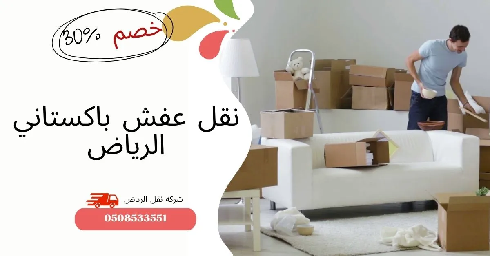

نقل عفش باكستاني الرياض

يحتاج فن نقل الأثاث إلى خبرة واهتمام بالتفاصيل وخاصة في مدينة كبيرة مثل الرياض، حيث يتطلب الانتقال بين الأحياء تخطيطًا دقيقًا وتنفيذًا محترفًا، وأصبحت خدمات نقل عفش باكستاني الرياض الخيار الأمثل للكثير من العائلات بفضل مزاياها التي تجمع بين الأمان والسرعة، ومع تزايد الطلب على هذه الخدمات أصبح العملاء يبحثون عن شركات تقدم حلولًا مبتكرة تلبي احتياجاتهم بأسعار تنافسية، و اسم شركتنا نقل الرياض يبرز كإحدى أفضل الخيارات في هذا المجال.
نقل عفش باكستاني الرياض
تعتبر خدمات نقل عفش باكستاني الرياض من الخيارات المفضلة لكثير من السكان في العاصمة، حيث تتميز هذه الشركة بتقديم خدمات مهنية وموثوقة، ويعتمد الكثير من العملاء على هذه الخدمة لما توفره من سهولة وأمان في نقل الأثاث والممتلكات مما يجعلها الخيار الأول للعديد من الأسر، وإليك بعض النقاط المهمة حول هذه الخدمة:
خدمة عملاء ممتازة
توفر الشركة فريق عمل محترف يتحدث عدة لغات، مما يسهل التواصل مع العملاء ويضمن تلبية احتياجاتهم، ويتم تدريب موظفي خدمة العملاء على مهارات التعامل مع الاستفسارات والشكاوى بطريقة احترافية.
أسطول نقل متكامل
تمتلك الشركة مجموعة متنوعة من المركبات المناسبة لنقل العفش بالرياض بما في ذلك الشاحنات الكبيرة والمركبات الصغيرة، وكل مركبة مجهزة بأدوات متخصصة لضمان أمان الأثاث أثناء النقل.
تغليف احترافي
بتم استخدام مواد تغليف عالية الجودة لحماية الأثاث أثناء النقل مما يقلل من فرص التلف أو الكسر، وتشمل المواد المستخدمة الأغطية الواقية والصناديق القابلة لإعادة الاستخدام والمواد القابلة للتدوير.
أسعار تنافسية
تقدم الشركة أسعارًا معقولة تناسب جميع الميزانيات، مما يجعلها في متناول الجميع، كما تقدم عروضًا خاصة على الحزم الموسمية لجذب المزيد من العملاء.
توقيت مرن
تتيح الشركة للعملاء اختيار الوقت المناسب لهم لنقل العفش مما يسهل عملية الانتقال ويقلل من الضغط النفسي، ويمكن للعميل تحديد مواعيد النقل في عطلات نهاية الأسبوع أو خلال أيام الأسبوع، حسب احتياجاته.
نقل عفش بالرياض 200 ريال
إذا كنت تبحث عن خدمة نقل عفش باكستاني الرياض بأسعار معقولة فإن الخيارات المتاحة تبدأ من 200 ريال، وهذه الخدمة تناسب العديد من العملاء الذين يرغبون في توفير تكاليف النقل دون التضحية بالجودة، وإليك بعض النقاط الهامة المتعلقة بهذه الخدمة:
- تفاصيل الأسعار: توفر الشركة باقات مختلفة تبدأ من 200 ريال مما يسهل على العملاء اختيار ما يناسبهم، وتقدم الشركة أيضًا خصومات خاصة للعمليات الكبيرة أو التعاقدات الشهرية.
- خدمات إضافية: تشمل الخدمة غالبًا تركيب الأثاث بعد الوصول مما يوفر الوقت والجهد للعملاء، كما يمكن توفير خدمات تفكيك الأثاث قبل النقل لضمان سهولة الحمل.
- وقت التنفيذ: تعمل الشركة على إنجاز عملية النقل في أسرع وقت ممكن لضمان راحة العميل، وعادة ما تستغرق عملية النقل من ساعة إلى ثلاث ساعات حسب حجم الأثاث والمسافة.
- تقييمات العملاء: تحظى الشركة بتقييمات إيجابية من العملاء السابقين مما يؤكد على جودة الخدمة، ويمكن للعملاء الاطلاع على تجارب الآخرين من خلال المواقع الإلكترونية ومنصات التواصل الاجتماعي.
- المرونة في المواعيد: يمكن للعميل تحديد موعد النقل بما يتناسب مع جدول أعماله مما يزيد من راحة البال، وتقدم الشركة أيضًا خيارات متاحة للنقل الفوري في حالات الطوارئ.
- خدمة ما بعد النقل: توفر الشركة دعمًا للعملاء حتى بعد انتهاء عملية النقل، حيث يمكنهم التواصل مع الشركة لأي استفسارات أو طلبات.
دينا نقل عفش باكستاني
تتميز دينا نقل عفش باكستاني الرياض بتقديم خدمات نقل متكاملة تناسب احتياجات مختلف العملاء، وتعتمد الشركة على استخدام شاحنات دينا ذات السعة الكبيرة التي تساعد في نقل كميات كبيرة من الأثاث بكفاءة، وإليك بعض النقاط التي تبرز مميزات هذه الخدمة:
- حجم الشاحنات: توفر شاحنات دينا سعة كبيرة لنقل الأثاث مما يعني إمكانية نقل كميات كبيرة في رحلة واحدة، وهذا يساعد في تقليل تكاليف النقل على العملاء.
- فريق عمل مدرب: يتمتع فريق العمل بخبرة واسعة في عمليات النقل مما يضمن تنفيذ الخدمة بشكل احترافي، ويتم تدريب الموظفين على تقنيات التحميل والتفريغ الصحيحة لحماية الأثاث.
- تأمين الأثاث: تقدم الشركة خيارات تأمين على الأثاث المنقول مما يضمن حقوق العملاء في حال حدوث أي تلف، ويمكن للعملاء اختيار مستوى التأمين المناسب لهم.
- خدمات إضافية: تشمل خدمات دينا نقل عفش باكستاني عمليات الفك والتركيب للأثاث مما يجعل العملية أكثر سهولة، كما تتوفر خدمات التنظيف بعد النقل.
- تغطية شاملة: تغطي خدمات الشركة جميع مناطق الرياض مما يوفر للعملاء خيارات متعددة للنقل، ويمكن للعملاء الاستفادة من خدمات النقل في جميع الأوقات بما في ذلك العطلات.
- تقييمات إيجابية: تحظى الشركة بسمعة جيدة في السوق، حيث يثني العملاء على سرعة وكفاءة الخدمة مما يعزز من ثقة العملاء الجدد.
نقل عفش شمال الرياض
تسعى شركة نقل العفش لتقديم خدمات نقل عفش باكستاني الرياض في الشمال متميزة تلبي احتياجات سكان هذه المنطقة، وتعتبر هذه الخدمات ضرورية لتسهيل عمليات الانتقال للأسر والشركات، وإليك بعض العناصر المهمة المتعلقة بهذه الخدمة:
دقة المواعيد
تلتزم الشركة بالمواعيد المحددة لتنفيذ عمليات النقل مما يرفع من مستوى الثقة بين العملاء، وتعتبر الدقة في المواعيد أحد المعايير الرئيسية التي تميز الشركة.
تخصص في النقل
يتمتع فريق العمل بخبرة في نقل الأثاث في شمال الرياض ليضمن التعامل مع التحديات المحلية بشكل فعال، ويعرف الفريق طرق المنطقة جيدًا مما يساعد في تجنب الاختناقات المرورية.
مواد تغليف آمنة
تستخدم الشركة مواد تغليف متطورة لحماية الأثاث والممتلكات أثناء النقل مما يقلل من فرص التلف، وتشمل هذه المواد الصناديق المخصصة والأغطية القابلة للتعديل والمواد العازلة.
أسعار مناسبة
تتنافس الشركة في تقديم أسعار معقولة وهذا يجعل خدماتها متاحة لشريحة واسعة من العملاء، وتقدم عروضاً خاصة للطلاب والأسر الكبيرة.
تقييمات إيجابية
تحظى الشركة بسمعة جيدة في المنطقة، حيث يثني العملاء على سرعة وكفاءة الخدمة، ويمكن الاطلاع على تقييمات العملاء عبر الإنترنت للحصول على فكرة شاملة عن الجودة المقدمة.
حراج نقل عفش الرياض
حراج نقل عفش الرياض هو وجهة رائعة للبحث عن أفضل عروض خدمات نقل عفش باكستاني الرياض، ويجمع هذا الحراج بين العديد من مقدمي الخدمة مما يوفر خيارات متعددة للعملاء، وإليك بعض الجوانب المهمة حول حراج نقل العفش:
| تنوع الخيارات | يوفر الحراج مجموعة من مقدمي الخدمة مما يتيح للعملاء مقارنة الأسعار والخدمات، وهذا التنوع يساعد العملاء في اتخاذ قرارات مستنيرة بناءً على احتياجاتهم. |
| سهولة الوصول | يمكن للعملاء الوصول إلى حراج نقل العفش بسهولة سواء عبر الإنترنت أو من خلال زيارة الموقع، ويوفر الموقع معلومات شاملة عن كل مقدم خدمة. |
| تقييمات ومراجعات | يمكن للعملاء الاطلاع على تقييمات سابقة للخدمات المقدمة مما يساعد في اتخاذ القرار المناسب، وتعتبر المراجعات من العملاء السابقين مرجعًا مهمًا للجودة. |
| توافر المعلومات | يوفر الحراج معلومات شاملة عن كل مقدم خدمة، بما في ذلك الأسعار والخدمات المقدمة، ويمكن للعملاء أيضًا الحصول على معلومات عن العروض الخاصة. |
| عروض خاصة | تقدم العديد من الشركات عروضا خاصة عبر الحراج مما يساعد العملاء في الحصول على خدمات بأسعار منخفضة، وتعقد أيضًا مسابقات لعملاء الحراج لتقديم جوائز خاصة. |
| تجربة العملاء | يعزز الحراج من تجربة العملاء من خلال توفير معلومات شاملة مما يضمن حصولهم على أفضل خدمة ممكنة. |
الاسئلة الشائعة حول نقل عفش باكستاني الرياض
هل يمكن جدولة عملية النقل في عطلات نهاية الأسبوع؟
نعم تقدم شركة نقل الرياض مواعيد مرنة تناسب احتياجات العملاء، بما في ذلك عطلات نهاية الأسبوع والأوقات المسائية.
هل تشمل الخدمات التأمين على الأثاث أثناء النقل؟
بالطبع توفر الشركة خيارات تأمين تناسب جميع العملاء لضمان حماية ممتلكاتهم في حالة حدوث أي تلف أو خطأ أثناء النقل.
هل يتم تقديم خدمات تنظيف بعد نقل الأثاث؟
نعم توفر شركة نقل الرياض خدمات تنظيف شاملة بعد نقل الأثاث، مما يساعد العملاء في ترتيب منازلهم بسرعة ودون أي عناء.
هل يمكن طلب خدمة نقل العفش بشكل عاجل؟
بالتأكيد تقدم الشركة خدمات النقل الفوري لتلبية احتياجات العملاء في حالات الطوارئ، مع ضمان جودة وسرعة التنفيذ.